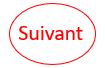

Roland-Garros est un tournoi du Grand Chelem, qui se déroule sur terre battue, à Paris en France.
La statistique la plus marquante du tournoi est bien sur celle du joueur le plus titré de l'histoire du tournoi : Rafael Nadal avec 14 victoires en simple messieurs
Il détient aussi le plus grand nombre de match sans perdre un seul set : 14 match.
Margaret Court est la joueuse la plus titrée du tournoi, avec 10 victoires en simple dames.
1. Novak Djokovic : numéro 1 mondial, et un champion en titre ; un joueur très complet.
2. Carlos Alcaraz : jeune joueur prometteur, a remporté l'US Open l'année précédente, et capable d'un tennis agressif particuliérement sur cette surface.
3. Rafael Nadal : il a annoncé sa blessure au pied en juin, il avait le pied anesthésié par les anti-douleurs en 2022 et a quand même remporté le tournoi.
4. Alexander Zverev : joueur solide et capable de pas mal de choses sur terre battue.
5. Stefanos Tsitsipas : joueur talentueux, et offensif depuis sa ligne de fond de court.
| |
|
|
 |